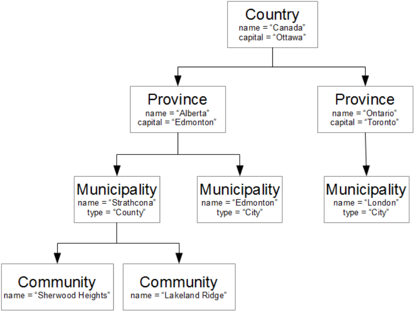

Data that can be represented in the form of a tree is called hierarchical data. One example could be a database of Canadian government jurisdictions. Only a small portion of the data tree is shown below as the complete database would be huge!

As the example shows, the country consists of several provinces (or territories), each of which may be divided into numerous cities, counties, towns, and districts. These municipalities may each contain several communities.
- Each item within the data tree (i.e. each box in the diagram above) is called a node.
- Nodes that are connected directly to each other have a parent-child relationship. The “higher” level node is called the parent and the “lower” level node is the child.
- For example, the
Municipalitynodes representing Edmonton and Strathcona County are children of theProvincenode representing Alberta. TheProvincenode is the parent of theMunicipalitynodes. - Any node may have many children; however, a node can only have one parent. In fact, every node has exactly
one parent, except for the very top level node (
Countryin this example) which does not have a parent at all. This top level node is called the root node of the data tree. - Nodes that have the same parent are siblings. For example, the
Municipalitynodes for Edmonton and Strathcona County are siblings because they both have the AlbertaProvincenode as their parent. - The node representing London, Ontario is not a sibling to Edmonton or Strathcona County since it has a different parent. (Although London would be siblings with other municipalities in Ontario, like Toronto or Niagara Falls.)
- The node names (
Country,Province,Municipality,Community) are general descriptions of the type of information they represent. - Each node may have several pieces of data attached to it. Each piece of data is called an
attribute of the node. For example, each
Provincenode has anameattribute and acapitalattribute. For theProvincenode representing Alberta, the capital attribute has the value “Edmonton”.
Assignment
Complete the assignment in Google Docs.